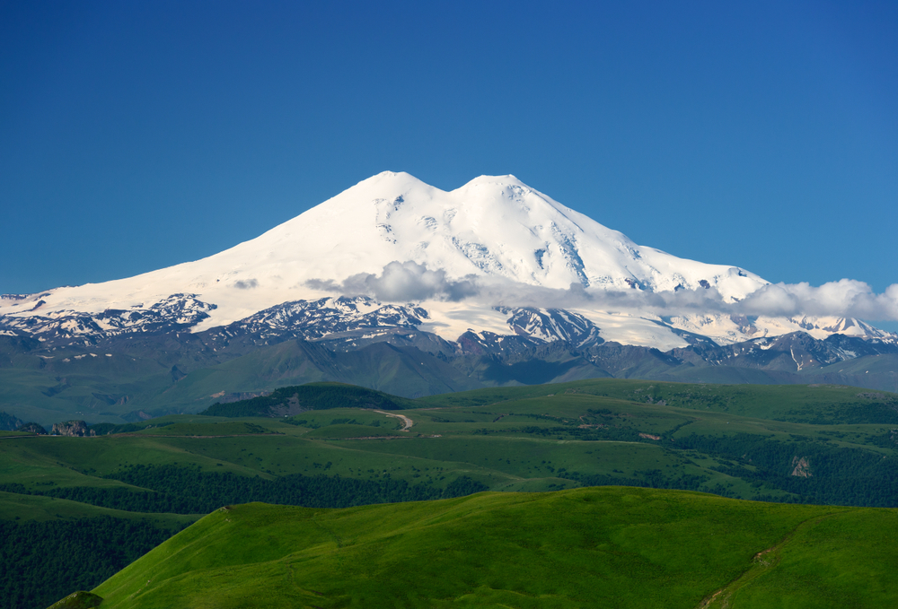

По высоте Уральские горы уступают Кавказским и Алтайским: главная вершина — гора Народная — поднимается на 1895 метров. Зато на Урале много необычных мест. Например, гора Манарага на Приполярном Урале — одна из самых красивых во всей горной цепи. Она считается местом силы — несмотря на труднодоступность, сюда приезжают путешественники со всего мира. Плато Маньпупунёр на Северном Урале — объект Всемирного наследия ЮНЕСКО и одно из семи чудес России. Перевал Дятлова печально известен загадочной гибелью группы студентов. А на Южном Урале находится самая древняя гора на планете — Карандаш. Её возраст оценивают примерно в 4 миллиарда лет. Достаточно поводов, чтобы однажды увидеть знаменитые горы своими глазами.
Крымские горы протянулись по полуострову на 160 км от Феодосии до Балаклавы. Большинство вершин сложены из известняка, поэтому у многих скал, — причудливые формы. Так, в Долине Приведений можно сделать эффектные фотографии с каменными столбами, напоминающими по форме людей, животных и птиц. А вот знаменитая гора Аю-Даг сформировалась из магмы, вышедшей когда-то на поверхность земли. Гора даже могла стать вулканом, но магма застыла, образовав внутри «пробку». Понравится здесь не только тем, кто любит красивые виды, но и увлекается геологией — в окрестностях можно найти много разных минералов.
green Самая известная вершина Крыма — конечно, Ай-Петри. С нее открываются живописная панорама на Черное море и горы. А скалы Кара-Дага покажутся знакомыми, потому что здесь снимались многие советские фильмы: «Алые паруса», «Человек-Амфибия» и др. Чистый воздух, буковые и сосновые леса, водопады, каньоны, пещеры — все это тоже о Крымских горах. Целый мир, который откроется вам после недолгого перелета из Москвы на самолете. 